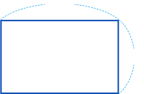

직사각형은 변이 몇 개인가요?

8cm
5cm
가로
세로
가로의 길이를 가로,
세로의 길이를 세로라고
부르기도 해.
마주 보는 두 변의 길이가 같습니다.
직사각형의 둘레를 구하는 방법을 이야기해 보세요.
8cm
5cm
가로와 세로를 더한 후 이를 2배 하여 구합니다.
가로’와 ‘세로’를 사용하여 직사각형의 둘레를 구하는 방법을 식으로 나타내어 보세요.
(직사각형의 둘레) =
×
2
+
×
2
=
(
+
)
×
2
식을 이용하여 평행사변형의 둘레는 몇 cm인지 구해 보세요.
식:
=
답:
cm